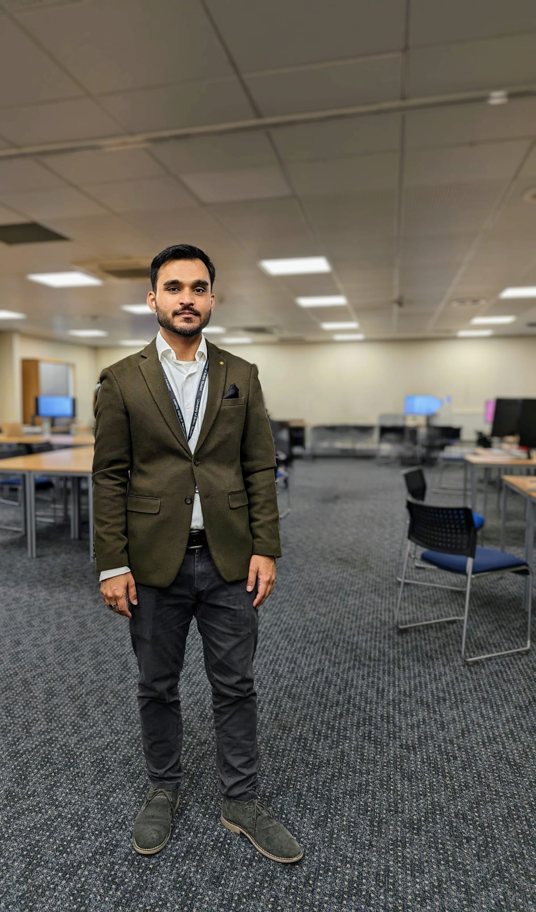

I build computer vision, edge AI and automation systems that run in production — from real-time object detection on embedded hardware to published research on intelligent recognition systems. MSc Data Analytics (Distinction) · Published at ICRITO'2025.

I'm an AI Software Developer with over three years of professional experience — and six years since first working in data science — spanning computer vision, edge AI, NLP, and automation, across both commercial delivery and academic research.
Currently, I lead development of a real-time AI-powered video analytics platform for a major UK supermarket chain, running object detection on NVIDIA Orin edge devices deployed across retail sites nationwide.
Previously, as a Data Scientist, I delivered projects for commercial customers — unifying fragmented multi-source consumer data, building forecasting systems, and designing KPI dashboards that directly informed business decisions. Before that, I spent two years freelancing across computer vision and NLP for international clients.
My Master's thesis on enhancing Automatic Licence Plate Recognition (ALPR) systems was published at the 12th International Conference on Reliability, Infocom Technologies and Optimisation (ICRITO'2025), and recognised as a Top Project at the University of Bolton.
I'm actively deepening my expertise in Generative AI, LLMs and RAG systems through NVIDIA and Udemy coursework, and building a RAG-based retrieval system as an independent project.
From undergraduate studies through freelancing, industry roles, and a Master's with Distinction, to production AI today.
Foundational coursework spanning software architecture, algorithms, object-oriented design, machine learning, and data science — building the systems engineering grounding I now apply to automation, edge devices, and production AI. Final year project: BlogifyUs, an NLP-driven trend summarisation platform.
Advanced study in data science, big data, research methods, and solution design. Thesis on enhancing ALPR systems, later published at ICRITO'2025 and recognised as a Top Project.
Production systems, published research, and independent exploration across computer vision, edge AI, NLP and data science.
Real-time object detection pipeline for a major UK supermarket chain — from camera ingestion through detection to automated alerting, replacing manual surveillance across a nationwide network.
Novel "usual route identification" algorithm enhancing ALPR systems to detect cloned vehicles, with a custom character-wise accuracy metric inspired by the confusion matrix.
U-Net semantic segmentation model masking building footprints in satellite imagery for urban analysis, trained on the Village Finder dataset.
Contributed to re-architecting a monolithic cloud platform into independent microservices to support growing customer numbers, alongside access control and data segregation keeping each customer's data isolated.
Embedded application on Raspberry Pi using Python and the Kivy UI framework, with GPIO hardware control and a software auto-restart mechanism for resilience through power loss and unexpected shutdowns.
Automated daily ETL pipeline consolidating varied operational source systems into a central warehouse, handling differing data structures across system versions via dedicated extraction scripts and a unified schema.
Forecasting model incorporating external variables such as weather to predict demand ahead of time, enabling proactive production scheduling that cut wastage while protecting sales.
Full pipeline from MongoDB through PySpark and Scikit-learn to Power BI, analysing fashion retail data and comparing multiple regression and classification algorithms for price and rating prediction.
Django application that crawls trending Twitter hashtags, generates abstractive summaries via sequence-to-sequence models, and classifies public sentiment automatically.
Vector space model search engine built from scratch — vocabulary extraction, term and document frequency scoring, TF-IDF weighting, and query relevance ranking.
View on GitHub →Transfer learning with pre-trained VGG-16 and ResNet-18 to classify chest X-rays, extended to a multi-label problem distinguishing COVID-19 from overlapping pneumonia symptoms.
View on GitHub →Led a team building a network traffic anomaly detection tool (Normal vs. Attack) on the UNSW-NB15 dataset, competing among participants across the APAC region.
12th International Conference on Reliability, Infocom Technologies and Optimisation — ICRITO'2025, Noida NCR, India · 18–19 September 2025.
Proposed a novel "usual route identification" algorithm and a character-wise accuracy metric for evaluating Automatic Licence Plate Recognition systems, achieving 96% evaluation accuracy versus 88% with conventional string matching. Recognised as a Top Project at the University of Bolton.
Open to KTP Associate roles, AI/ML engineering positions, and PhD opportunities in computer vision, edge AI, automation, or applied machine learning.